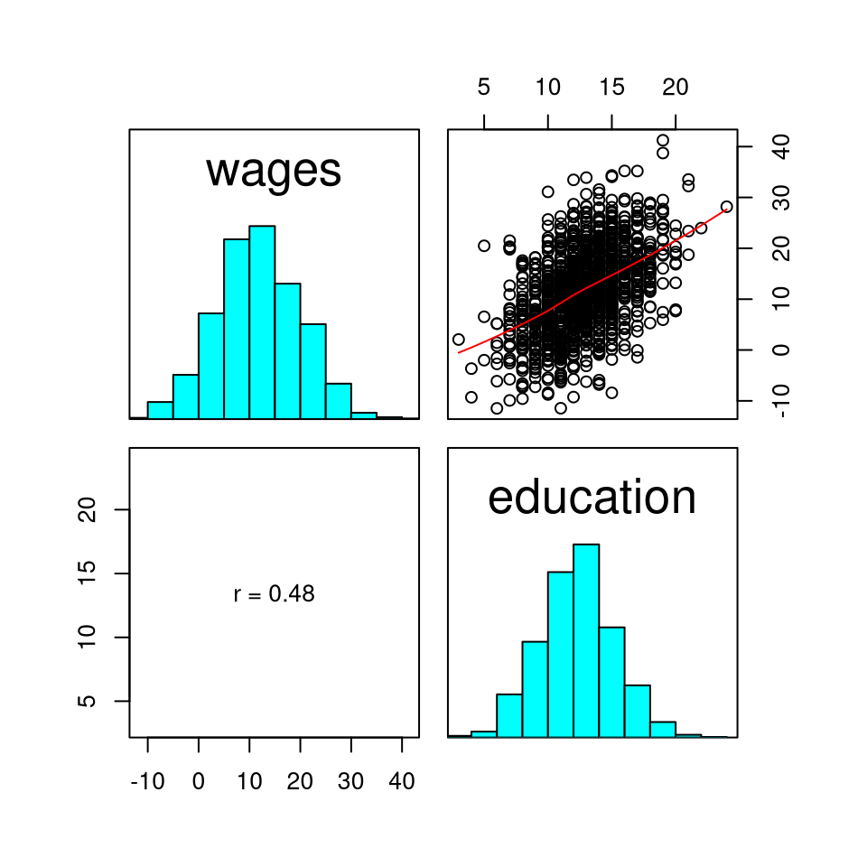

Introduction to jeksterslabRlinreg
Ivan Jacob Agaloos Pesigan
2020-08-19
Source:vignettes/jeksterslabRlinreg.Rmd
jeksterslabRlinreg.RmdjeksterslabRlinreg is a collection of functions that I find useful in studying linear regression concepts and methods.
Installation
You can install the released version of jeksterslabRlinreg from GitHub with:
library(devtools) install_github("jeksterslabds/jeksterslabRlinreg")
Example
Data
In this hypothetical example, we are interested in the association between wages and education. The regressor variable is years of education. The regressand variable is hourly wage in US dollars.
#> constant education
#> [1,] 1 13
#> [2,] 1 17
#> [3,] 1 11
#> [4,] 1 13
#> [5,] 1 10
#> [6,] 1 13
#> wages
#> [1,] 9.006154
#> [2,] 11.561855
#> [3,] 5.898704
#> [4,] 23.293684
#> [5,] -3.266169
#> [6,] 8.842341
jeksterslabRlinreg::linreg()
The jeksterslabRlinreg::linreg() function fits a linear regression model using X and y. In this example, X consists of a column of constants and years of education and y consists of hourly wages in US dollars.
The output includes the following:
- Model assessment
- ANOVA table
- Table of regression coefficients with the following columns
- Regression coefficients
- Standard errors
- \(t\) statistic
- \(p\) value
- Standardized coefficients
- Confidence intervals (0.05, 0.5, 2.5, 97.5, 99.5, 99.95)
- Means and standard deviations
- Scatterplot matrix
- Residual plots
jeksterslabRlinreg::linreg( X = X, y = y ) #> #> Model Assessment: #> Value #> RSS 63153.20 #> MSE 48.99 #> RMSE 7.00 #> R-squared 0.23 #> Adj. R-squared 0.23 #> #> ANOVA Table: #> df SS MS F p #> Model 1 18553.44 18553.44296 378.1009 4.837717e-74 #> Error 1287 63153.20 49.07008 NA NA #> Total 1288 81706.64 NA NA NA #> #> Coefficients: #> coef se t p #> Intercept -4.712848 0.87000841 -5.417015 7.225622e-08 #> education 1.309917 0.06736585 19.444817 4.837717e-74 #> #> Standardized Coefficients: #> Textbook standard errors are used. #> coef se t p #> education 0.4765227 0.02450641 19.44482 4.837717e-74 #> #> Confidence Intervals - Regression Coefficients: #> ci_0.05 ci_0.5 ci_2.5 ci_97.5 ci_99.5 ci_99.95 #> Intercept -7.582225 -6.957170 -6.419639 -3.006058 -2.468527 -1.843471 #> education 1.087737 1.136136 1.177758 1.442075 1.483697 1.532096 #> #> Confidence Intervals - Standardized Slopes: #> ci_0.05 ci_0.5 ci_2.5 ci_97.5 ci_99.5 ci_99.95 #> education 0.395698 0.4133046 0.4284458 0.5245996 0.5397408 0.5573473 #> #> Means and Standard Deviations: #> Mean SD #> wages 11.77340 7.964724 #> education 12.58573 2.897415
